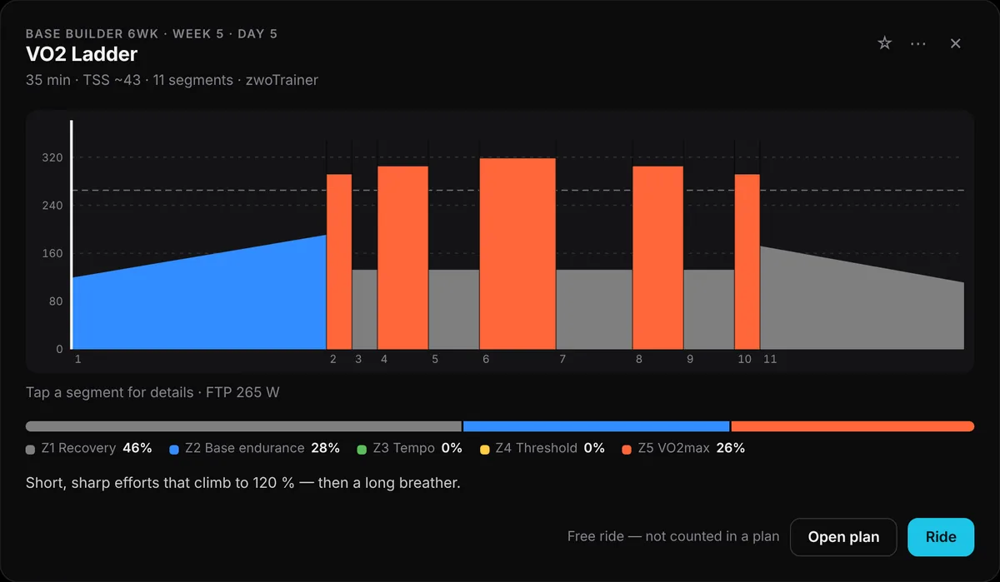
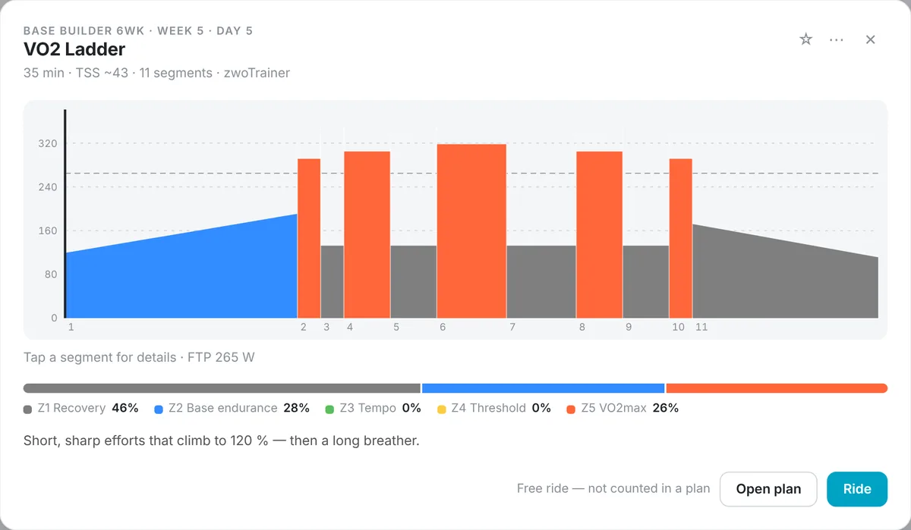
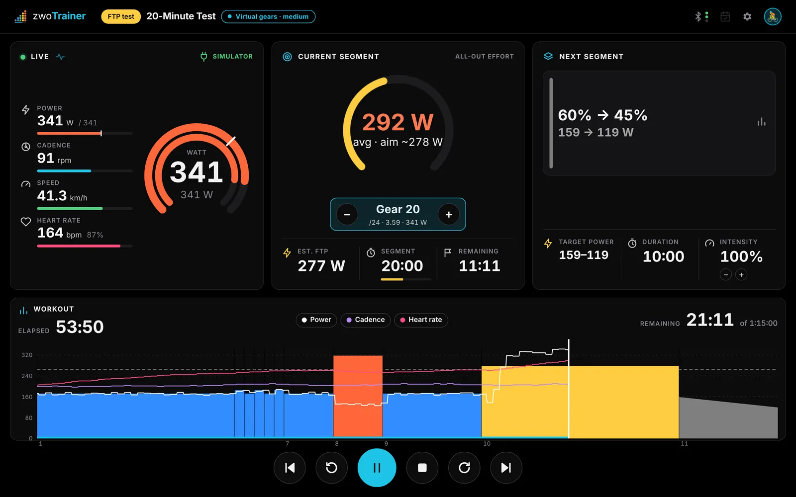
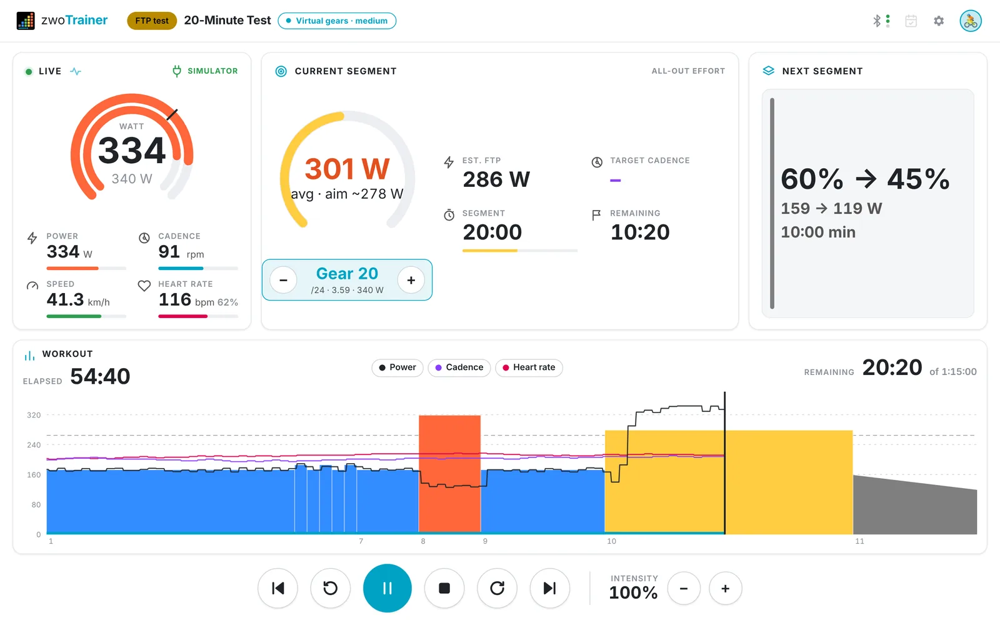
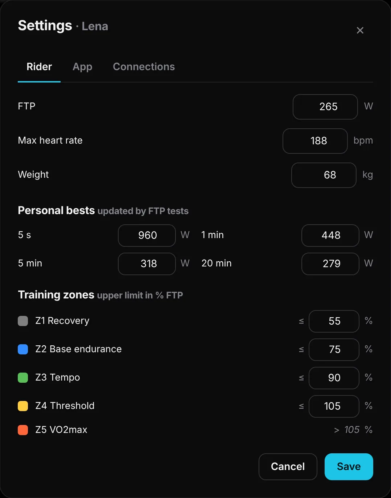
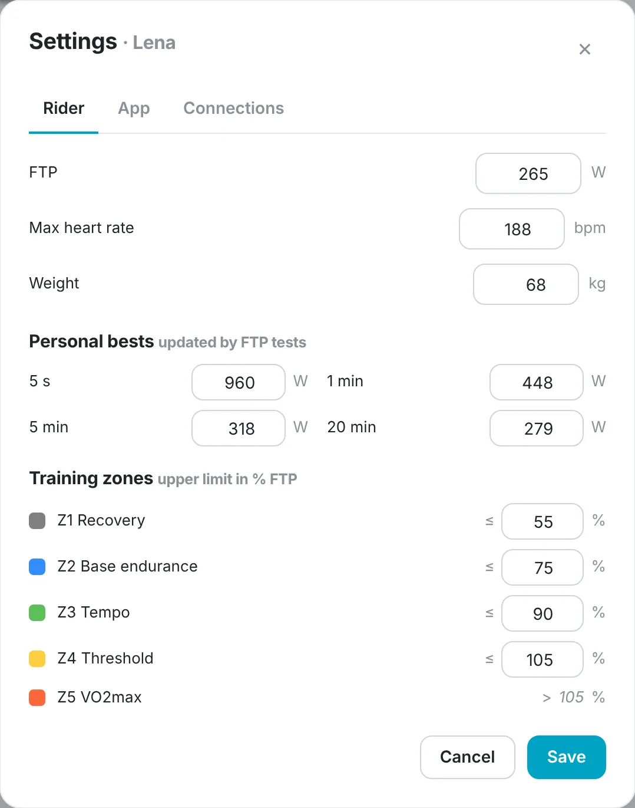
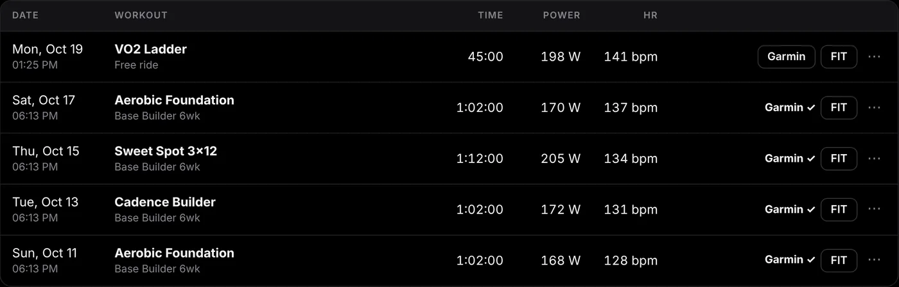
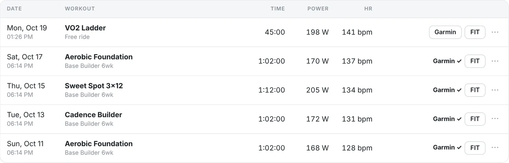

Everything you need for structured training. Nothing else.
A closer look at the ride screen, plans, the workout library, FTP testing, virtual shifting, riders and uploads.
Hold the number.
ERG follows every target second by second, ramps included. When a segment is free-ride or all-out, ERG lets go and you ride on your gears.
| Space | start / pause |
| ← → | previous / next segment |
| ↑ ↓ | intensity ±1 % (with Shift ±10 %) |
| + − | shift virtual gear |
| Esc | end the workout |


Starts when you do
The workout begins after about two seconds of pedalling — or press Space.
Cadence check
Segments with a cadence target show it next to your cadence; the bar turns green, amber or red.
Auto-pause
Stop pedalling for three seconds and the clock stops. Pedal again to resume.
Countdown beeps
Three beeps before every change of target, so the next block never surprises you.
Your coach is a folder.
Organise .zwo files by week and day and zwoTrainer turns them into a plan with progress, a description and an always-ready next session.


In order
Only the next workout can be started; later ones stay locked so the plan does its job.
Skip & undo
Skip marks a day as skipped and moves on. Changed your mind? Undo skip.
Plan description
A Markdown file in the folder shows up on the plan page — headings, lists, links and tables.
Several plans
Switch plans any time; each one keeps its own progress.
Find the right session in seconds.
Your whole library in one list: every row shows the workout's profile, duration, dominant zone and estimated TSS.




Filters
Search by name, then filter by length (≤ 30 to > 90 min) and by zone Z1–Z5, several at once.
Sorting
By name, shortest, longest, hardest (TSS), intensity or recently ridden.
Favorites
Star the sessions you love and put them in your own order.
Details first
Open a workout to see every segment in watts for your FTP and the time in each zone.
Test hard. Get a fair result.
Ramp, Ramp Lite, 20-minute, 8-minute and Power Profile tests are built in, and test workouts in your own library are recognised automatically.


Live pacing
In efforts of five minutes or more you see your running average and the estimated FTP — plus a “too fast · ease off” warning.
Only completed efforts count
Stop an all-out effort early and there's no FTP — just a clear note on how much you rode. Your bests are still saved.
Ramp done right
When you can't hold the ramp any longer, it ends and the trainer drops straight into an easy cool-down.
Plausibility check
A result more than 15 % away from your FTP comes with a hint to check calibration, power source and fatigue.
Gears where your trainer has none.
A virtual 24-speed drivetrain: cadence × gear ratio gives a speed, and road physics with your weight turns it into the watts the trainer holds. Perfect for free-ride blocks and all-out efforts.


Zwift controllers
Zwift Ride, Click and Play: shift, change intensity, skip segments and start or pause from the bars.
No controller?
Shift with + / − or the on-screen buttons.
Your choice per ride
Real gears, or virtual gears easy, medium or hard — the default lives in the settings.
Button test
A live tester shows every press and the action it triggers.
One app for the whole household.
Each rider has an avatar, FTP, max heart rate, weight, zones, power bests, plan progress, favorites, history and paired devices.




Your zones
Set zone limits in % of FTP; watts update automatically when your FTP changes.
Power bests
5 s, 1, 5 and 20 minutes — updated by every FTP test.
Sync
Keep riders in sync between computers through iCloud Drive, Dropbox, Nextcloud or any synced folder.
Stays local
No account, no cloud of ours. Sign-ins and paired devices stay on each computer.
From the trainer to your feed.
Every ride is recorded as a FIT file. Upload it automatically or with one click, and see a ✓ in the history where it went.




Garmin Connect
Sign in on Garmin's own page (MFA supported). Activities are named after the workout and get Training Effect.
Strava
Link Strava to Garmin once and rides continue from there automatically.
Intervals.icu
Direct, automatic uploads with your API key.
COROS & FIT
A ready-to-import ZIP for COROS Training Hub, and plain FIT export for everything else.
Fuel the next feature.
zwoTrainer is free, open source and independent — no investors, no subscription, no ads, no account. If it has earned a spot in your training week, a coffee is the easiest way to say thanks and keep the updates rolling: new tests, smarter plans, support for more devices.
Think of it as a gel for the developer. Starring the repo or reporting a bug helps just as much.